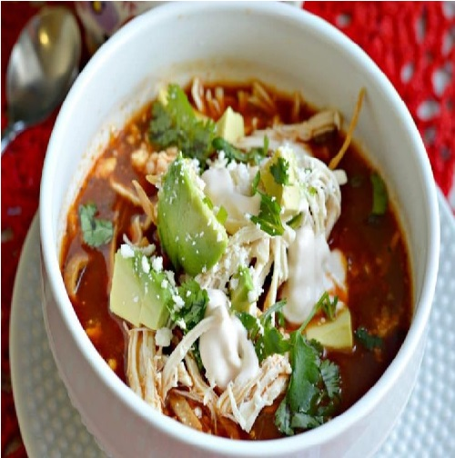

Receta para Sopa de Tortilla
INGREDIENTES:
- 3 Piezas de Chile pasilla sin semillas y remojados en agua caliente.
- 3 Jitomates cortados en cubos.
- 1 Litro de Caldo de pollo.
- 1/2 Taza de Puré de tomate natural.
- 2 Cubos de Concentrado de Tomate con Pollo.
- 1 Cucharada de Aceite vegetal.
- 2 Ramitas de Epazote desinfectado.
- 3 1/2 Tazas de Tortillas de maíz cortadas en tiras y fritas.
- 200 Gramos de Queso fresco cortado en cubos pequeños.
- 1 Aguacate cortado en cubos.
- 1 Chile pasilla frito y cortado en tiras.
- 1 Envase de Media Crema refrigerada (190g).
INSTRUCCIONES:
- Licúa los 3 chiles pasilla con los jitomates, 1 taza de caldo de pollo, el puré de tomate y el Concentrado de Tomate con Pollo y cuela.
- Calienta el aceite, vierte lo que licuaste y cocina hasta hierva, moviendo ocasionalmente. Agrega el resto del caldo de pollo con el epazote y cocina por 5 minutos más.
- En un plato hondo, sirve un poco de tortillas fritas, cubos de queso, cubos de aguacate, tiras de chile pasilla y caldo. Decora con la Media Crema y a disfrutar.